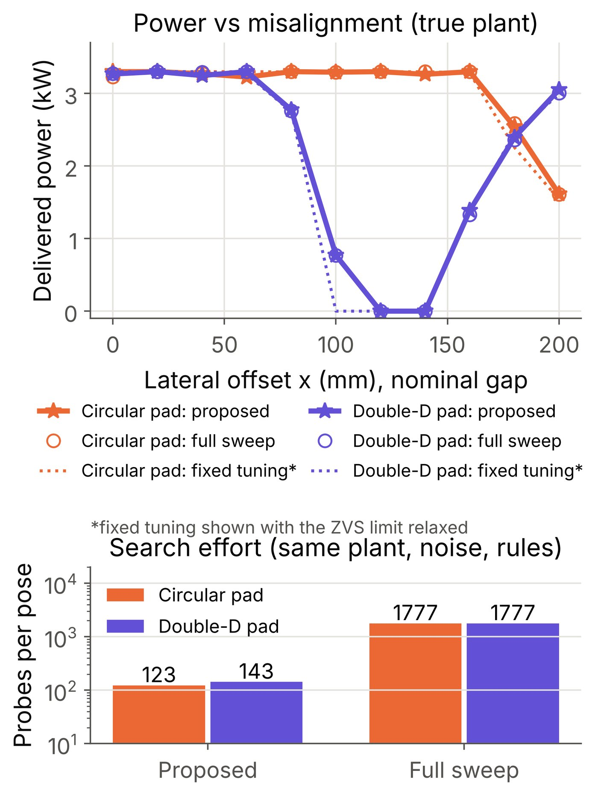
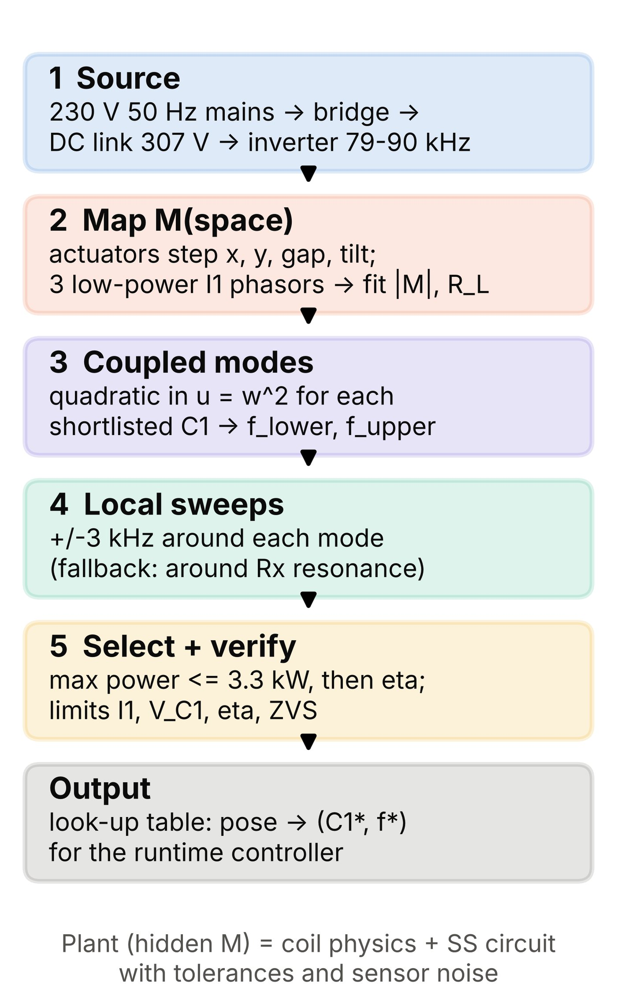
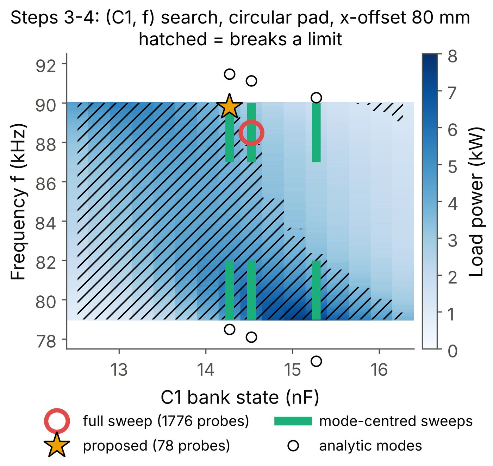
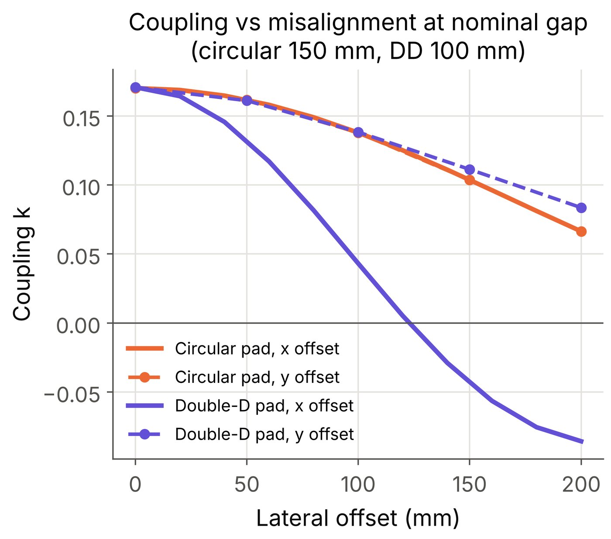
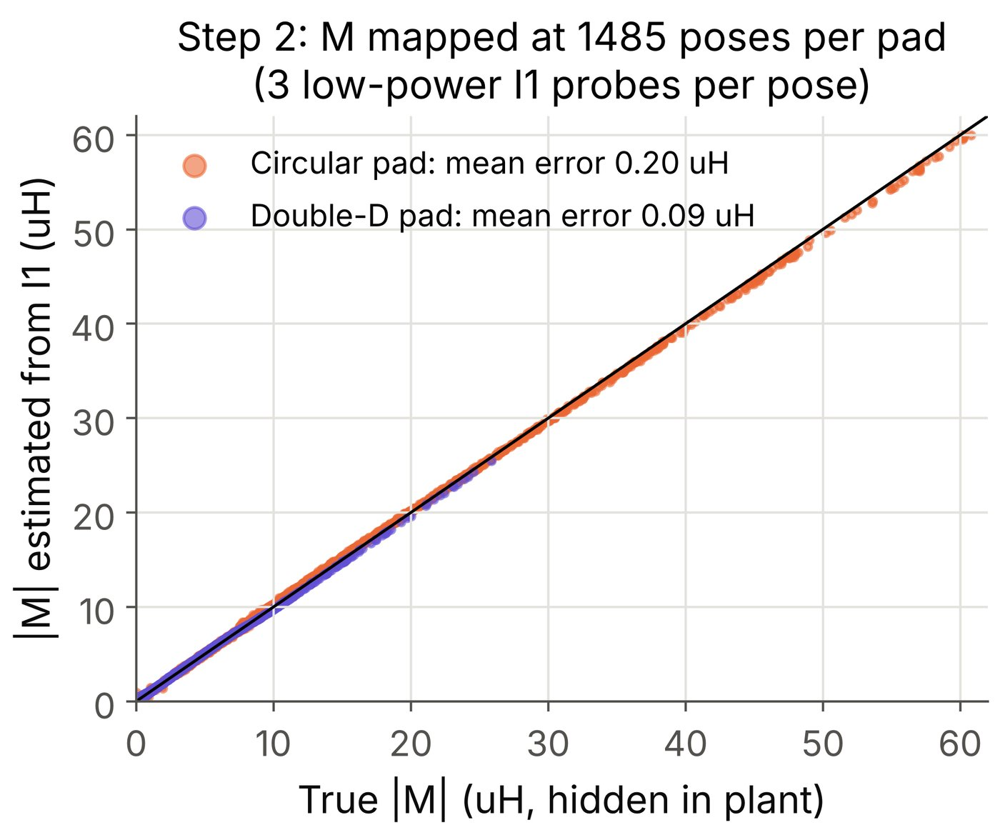
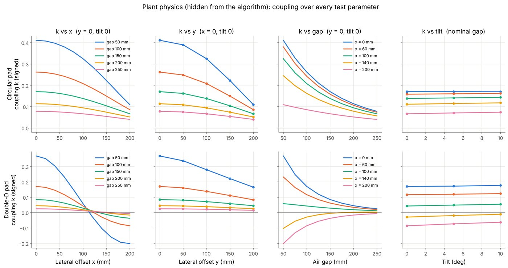
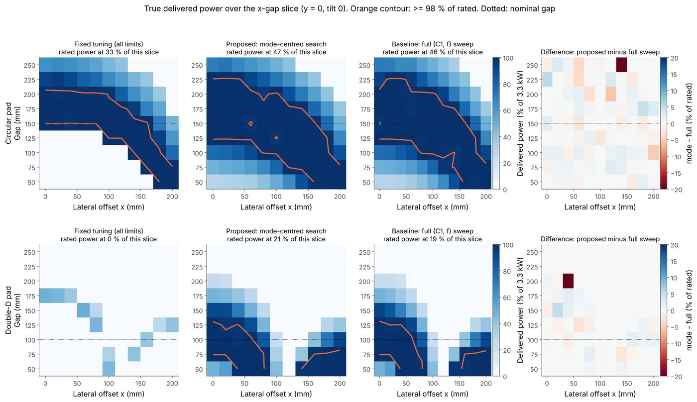
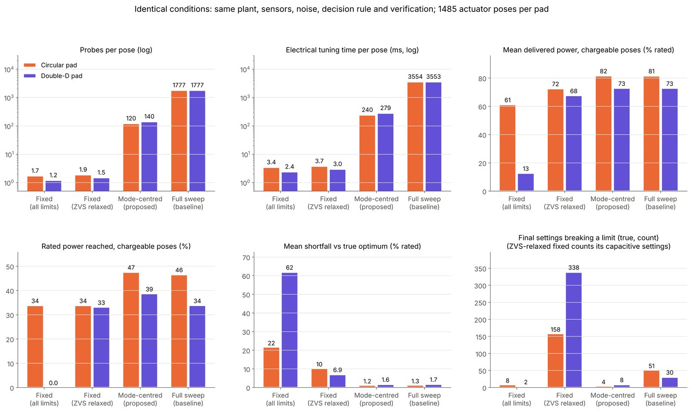
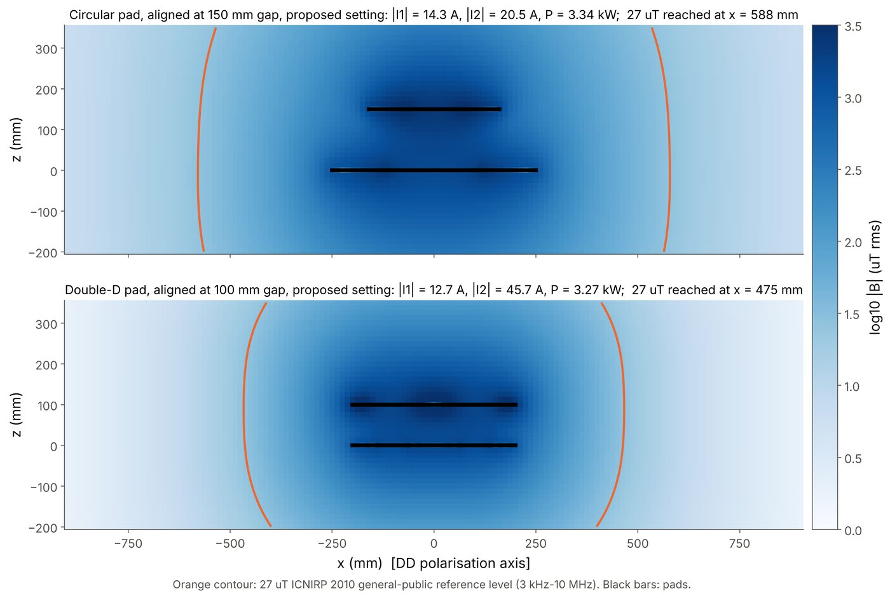

In one minute
When an EV charging pad is misaligned, the mutual inductance M between the coils changes, and a fixed-tuned charger either loses power or exceeds its current limits. We simulate a 3.3 kW, 85 kHz series–series link and adapt two transmitter-side knobs: a switched capacitor bank C1 and the inverter frequency f. The receiver is unmodified and M is never measured directly.
Actuators move the transmitter pad through 1,485 poses. Three low-power current readings per pose recover |M| to about 2%. We then solve for the two coupled-mode resonances analytically and probe only narrow windows around them, which gives the same power as an exhaustive sweep with about 13× fewer probes.
Interactive simulations
These run live in your browser on the same models as the project code: pad coupling from the Neumann-integral coil models, the series–series circuit with its component tolerances, 0.5% sensor noise, and the same limits and decision rule. The third tab shows the recorded results of the full 1,485-pose runs.
Park the car anywhere in the bay by dragging it in the top view or using the sliders. The transmitter pad sits on an x–y stage with a lift. Press Align & tune. The transmitter first locates the receiver from its own current, then moves under it and picks a lift height. Finally it tunes C1 and f around the predicted coupled modes.
- Locate
- Refine position
- Lift
- Tune (C1, f)
- Charge
Field lines are a 2-D cross-section drawn from the live coil currents. All numbers come from the full 3-D coupling model.
Set the misalignment, then turn the two knobs yourself: the C1 bank state and the inverter frequency. Watch the currents on the oscilloscope, the field between the pads and the power curve with its two coupled-mode peaks. Click the curve to jump to a frequency, or let Best (C1, f) find the optimum.
Every cell is one recorded pose from the 1,485-pose run of each pad: the true outcome of the setting each method chose. Pick a slice, then tap a cell for its |M| map value, chosen C1 and f, and probe count.
Grey cells: no setting meets every limit at that pose.
Key results

| Circular pad | DD pad | |
|---|---|---|
| Probes per pose (proposed vs full) | 123 vs 1,776 | 143 vs 1,776 |
| Within 2% of full sweep | 83% of poses | 93% of poses |
| Fixed tuning acceptable | 61% (72% ignoring ZVS) | 13% (68% ignoring ZVS) |
| Shortfall vs true optimum (proposed / full) | 1.2% / 1.3% | 1.6% / 1.7% |
How it works
- Source: 230 V mains → rectifier → DC link → inverter at 79–90 kHz.
- Map M(space): the transmitter's actuators step x, y, gap and tilt. At each pose, |M| is fitted from the measured I1 phasor.
- Predict the modes: the mapped M goes into the resonance quadratic, giving two candidate frequencies per C1 state.
- Probe narrowly: sweep ±3 kHz around each mode, with a fallback near the receiver resonance.
- Select and verify: take the best safe (C1, f) within the I1, VC1, η and ZVS limits.


Governing physics
At 85 kHz the wavelength is about 3.5 km, much larger than the 0.5 m pad, so the near field is magnetoquasistatic.
M = (μ0/4π) ∮∮ dl1·dl2 / |r1 − r2| (Neumann) Zin = Z1 + ω²M²/Z2, PL = |I2|²RL (L1L2 − M²)u² − (L1/C2 + L2/C1)u + 1/(C1C2) = 0, u = ω²

More figures




References
- A. Alkasir et al., “Analytical modeling of self- and mutual inductances of DD coils in WPT applications,” J. Electromagn. Eng. Sci., 22(2):162–170, 2022.
- J. Xia, D. Wang, D. Xu, “A hybrid frequency adjusting method for the WPT system,” Electrical Engineering, 104:2679–2688, 2022.
- J. Park et al., “Investigation of adaptive matching methods for near-field WPT,” IEEE Trans. Antennas Propag., 59(5):1769–1773, 2011.
- Y. Lim et al., “An adaptive impedance-matching network based on a novel capacitor matrix for WPT,” IEEE Trans. Power Electron., 29(8):4403–4412, 2014.
- F. W. Grover, Inductance Calculations, 1946; D. J. Griffiths, Introduction to Electrodynamics, 4th ed., 2017.
- SAE J2954; ICNIRP Guidelines, Health Physics 99(6):818–836, 2010.